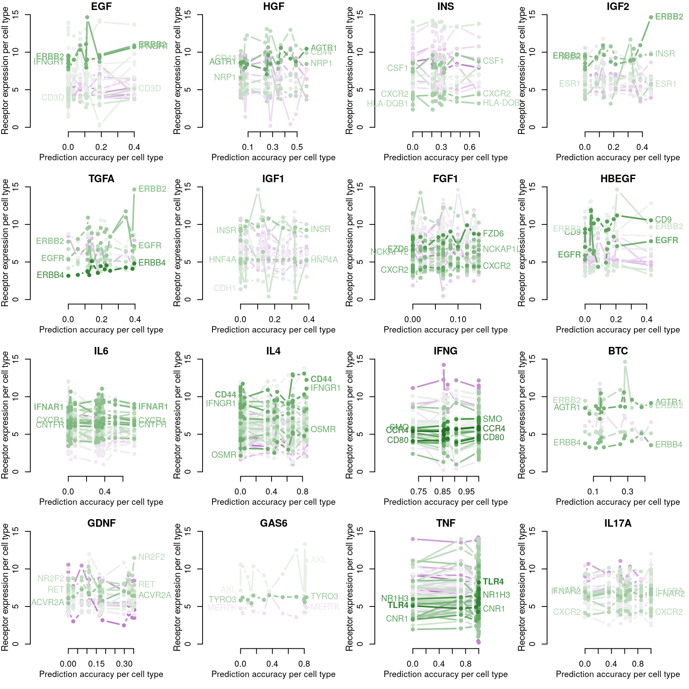
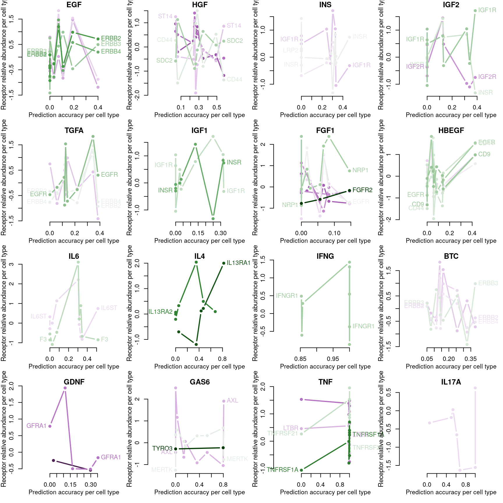

Biological factors affecting transcriptional response to ligand stimulus
Associating receptor mRNA / protein abundance with transcriptional response. The quantile-normalized transcriptomes per cell type (level 3 data) will be used to determine whether the cognate receptor for each ligand is present.
Receptor mapping from CCInx
Ligand-receptor interactions are from the Bader lab database included in CCInx.
Receptor expression per cell line
## 91% (14%) of EGF receptors present in CMap data, either inferred or (assayed).
## 100% (8%) of HGF receptors present in CMap data, either inferred or (assayed).
## 94% (25%) of INS receptors present in CMap data, either inferred or (assayed).
## 100% (19%) of IGF2 receptors present in CMap data, either inferred or (assayed).
## 100% (33%) of TGFA receptors present in CMap data, either inferred or (assayed).
## 100% (15%) of IGF1 receptors present in CMap data, either inferred or (assayed).
## 94% (15%) of FGF1 receptors present in CMap data, either inferred or (assayed).
## 100% (31%) of HBEGF receptors present in CMap data, either inferred or (assayed).
## 97% (11%) of IL6 receptors present in CMap data, either inferred or (assayed).
## 98% (12%) of IL4 receptors present in CMap data, either inferred or (assayed).
## 93% (9%) of IFNG receptors present in CMap data, either inferred or (assayed).
## 100% (40%) of BTC receptors present in CMap data, either inferred or (assayed).
## 89% (11%) of GDNF receptors present in CMap data, either inferred or (assayed).
## 100% (0%) of GAS6 receptors present in CMap data, either inferred or (assayed).
## 99% (12%) of TNF receptors present in CMap data, either inferred or (assayed).
## 100% (9%) of IL17A receptors present in CMap data, either inferred or (assayed).Below is an overview of all potential cognate receptors per ligand present in the data. The left figure shows which ligands (dark purple) each receptor is known to interact with. On the right is a heatmap showing mean normalized gene expression per cell type for each receptor gene, with darker indicating higher expression. Gene names (rows) are ordered by heirarchical clustering of ligand-receptor interaction data, such that receptors common to the same ligand should be together. Landmark gene expression was emperically determined rather than inferred (names indicated in bold). Ligand names (columns, left) are ordered by heirarchical clustering of ligand-receptor interaction data, such that ligands sharing the same receptors should be proximal. Cell type names (columns, right) are ordered by heirarchical clustering of mean receptor gene expression.
RF accuracy explained by receptor availability?
Cognate receptor expression for each ligand was compared to the accuracy per cell line of the leave-one-out ligand classification model outlined previously. Lines for each receptor are coloured by the spearman correlation coefficient between expression and accuracy per cell type (purple is negative, green is positive), and the three most correlated receptor genes are labeled.

Number of DE genes explained by receptor availability?
Cognate receptor expression for each ligand was compared to probability scores for the number of differentially expressed genes associated with each ligand-treated cell line outlined previously. Lines for each receptor are coloured by the spearman correlation coefficient between expression and DE score per cell type (purple is negative, green is positive), and the three most correlated receptor genes are labeled.

Receptor mapping from FANTOM5
Ligand-receptor interactions are from the FANTOM5 database (Ramilowski et al.)
Receptor expression per cell line
## 100% (50%) of EGF receptors present in CMap data, either inferred or (assayed).
## 100% (20%) of HGF receptors present in CMap data, either inferred or (assayed).
## 100% (33%) of INS receptors present in CMap data, either inferred or (assayed).
## 100% (67%) of IGF2 receptors present in CMap data, either inferred or (assayed).
## 100% (75%) of TGFA receptors present in CMap data, either inferred or (assayed).
## 100% (50%) of IGF1 receptors present in CMap data, either inferred or (assayed).
## 88% (50%) of FGF1 receptors present in CMap data, either inferred or (assayed).
## 100% (43%) of HBEGF receptors present in CMap data, either inferred or (assayed).
## 100% (0%) of IL6 receptors present in CMap data, either inferred or (assayed).
## 100% (40%) of IL4 receptors present in CMap data, either inferred or (assayed).
## 100% (0%) of IFNG receptors present in CMap data, either inferred or (assayed).
## 100% (75%) of BTC receptors present in CMap data, either inferred or (assayed).
## 80% (0%) of GDNF receptors present in CMap data, either inferred or (assayed).
## 100% (0%) of GAS6 receptors present in CMap data, either inferred or (assayed).
## 83% (17%) of TNF receptors present in CMap data, either inferred or (assayed).
## 100% (0%) of IL17A receptors present in CMap data, either inferred or (assayed).Below is an overview of all potential cognate receptors per ligand present in the data. The left figure shows which ligands (dark purple) each receptor is known to interact with. On the right is a heatmap showing mean normalized gene expression per cell type for each receptor gene, with darker indicating higher expression. Gene names (rows) are ordered by heirarchical clustering of ligand-receptor interaction data, such that receptors common to the same ligand should be together. Landmark gene expression was emperically determined rather than inferred (names indicated in bold). Ligand names (columns, left) are ordered by heirarchical clustering of ligand-receptor interaction data, such that ligands sharing the same receptors should be proximal. Cell type names (columns, right) are ordered by heirarchical clustering of mean receptor gene expression.
RF accuracy explained by receptor availability?
Cognate receptor expression for each ligand was compared to the accuracy per cell line of the leave-one-out ligand classification model outlined previously. Lines for each receptor are coloured by the spearman correlation coefficient between expression and accuracy per cell type (purple is negative, green is positive), and the three most correlated receptor genes are labeled.

Number of DE genes explained by receptor availability?
Cognate receptor expression for each ligand was compared to probability scores for the number of differentially expressed genes associated with each ligand-treated cell line outlined previously. Lines for each receptor are coloured by the spearman correlation coefficient between expression and DE score per cell type (purple is negative, green is positive), and the three most correlated receptor genes are labeled.
Transcriptional Activity Score explained by receptor availability?

Proteomics from DepMap, receptor mapping from FANTOM5
Ligand-receptor interactions are from the FANTOM5 database (Ramilowski et al.)
Receptor protein abundance per cell line

